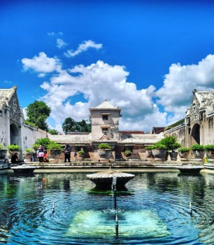
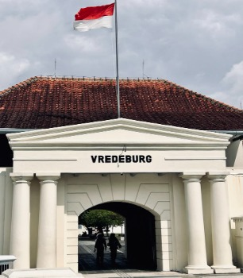

Kota
Jogjakarta
Istimewa negerinya,
istimewa orangnya.

Keraton Jogja
18th Century PalaceKeraton Yogyakarta adalah istana resmi Kesultanan Ngayogyakarta Hadiningrat yang didirikan oleh Sri Sultan Hamengkubuwono I pada tahun 1755. Sebagai pusat kebudayaan Jawa dan tempat tinggal Sultan, kompleks ini menawarkan pesona arsitektur klasik, peninggalan bersejarah, museum, hingga pertunjukan seni tradisional yang masih aktif.

Tugu Jogja
MonumentTugu Yogyakarta (Tugu Pal Putih) adalah landmark ikonik yang dibangun pada tahun 1755 oleh Sri Sultan Hamengkubuwono I. Berlokasi di perempatan Jalan Margo Utomo dan Jalan Jenderal Sudirman, tugu ini memiliki nilai filosofis tinggi dan menjadi pusat dari garis magis yang menghubungkan Gunung Merapi, Keraton, dan Pantai Selatan.

Malioboro
PedestrianJalan Malioboro adalah pusat denyut nadi wisata Kota Yogyakarta. Terbentang dari Tugu Yogyakarta hingga Titik Nol Kilometer, koridor ikonik ini menyajikan pesona budaya Jawa, belanja oleh-oleh (seperti Pasar Beringharjo), dan kuliner legendaris. Sangat cocok untuk berjalan kaki atau menikmati becak!

Taman Sari
18th Century Water PalaceIstana air megah milik Kesultanan Yogyakarta yang memadukan arsitektur Jawa dan Portugis. Terkenal dengan pemandian kuno yang estetik, lorong bawah tanah yang eksotis, dan Masjid Bawah Tanah (Sumur Gumuling) yang sangat ikonis.

Benteng Vredeburg
Old Dutch FortBenteng peninggalan era kolonial Belanda yang berdiri megah di ujung Jalan Malioboro. Kini berfungsi sebagai museum yang menyajikan diorama sejarah perjuangan nasional Indonesia, lengkap dengan arsitektur klasik Eropa yang masih terawat asli.
Fotografi
Jepretan gambar abadi,
berisi sejuta memori.


Inilah profil Delayota
SMA Negeri 8 Yogyakarta, tiada hari tanpa prestasi.
Terwujudnya lulusan yang berkarakter, unggul dalam iptek, berbudaya, peduli lingkungan, berprestasi, dan berwawasan global
Seni
Karawitan
Seni musik tradisional Jawa yang adiluhung dan
harus terus kita lestarikan.
-

Balungan
Dalam ansambel gamelan Jawa, balungan adalah kelompok instrumen penting yang bertugas memainkan kerangka melodi utama atau "tulang punggung" dari sebuah gending. Kelompok ini umumnya terdiri dari instrumen berbilah logam (metalofon) seperti Saron Barung, Saron Demung, dan Saron Pekking, yang dimainkan dengan cara memukul bilahan menggunakan pemukul khusus (tabuh) tangan kanan, sementara tangan kiri bertugas meredam getaran bilah sebelumnya (memathet). Sebagai pembawa melodi dasar, balungan menjadi acuan mutlak bagi instrumen lain (seperti bonang, gender, maupun rincikan lainnya) untuk mengembangkan improvisasi, variasi, dan jalinan musikal yang lebih rumit selama gending berlangsung.
-

Pencon
Instrumen pencon adalah kelompok alat musik dalam ansambel gamelan Jawa yang wujud fisiknya berbahan dasar logam—seperti perunggu, kuningan, atau besi—dan dicirikan oleh adanya tonjolan berbentuk lingkaran (pencu) di bagian tengah permukaannya sebagai titik pukul utama. Istilah "pencon" sendiri merujuk pada satuan dari alat musik ber-pencu tersebut, yang dalam permainan gamelan berfungsi sebagai pemangku irama maupun penentu struktur lagu. Kelompok instrumen ini meliputi alat musik berukuran besar yang digantung seperti gong ageng dan kempul, instrumen penegas ritme horizontal seperti kenong dan ketuk, hingga jajaran pencon kecil yang ditata dalam rak kayu untuk memainkan melodi atau hiasan lagu seperti bonang barung dan bonang penerus.
-

Ricikan Ngajeng
Ricikan ngajeng (atau instrumen depan) adalah kelompok instrumen dalam ansambel gamelan Jawa yang diletakkan di barisan depan dan berfungsi sebagai penuntun melodi, pengendali dinamika, serta pembawa rasa (resep) dalam sebuah gending. Kelompok ini terdiri dari instrumen-instrumen bertekstur halus, lembut, dan memiliki teknik permainan yang kompleks seperti rebab (sebagai pemimpin melodi), gender, siter/celempung, suling, serta gambang. Berbeda dengan instrumen balungan atau pencon penanda struktur yang berdegup tegas di bagian belakang, ricikan ngajeng memiliki peran krusial dalam menginterpretasikan esensi lagu, memberikan improvisasi ornamen nada (cengkok), dan membangun suasana musikal yang intim serta mendalam.
-
Ladrang Wilujeng
Ladrang wilujeng atau Ladrang Slamet merupakan salah satu gending yang populer dalam seni karawitan Jawa. Ladrang Wilujeng biasanya di mainkan pada awal dimulainya suatu acara. Ladrang Wilujeng memiliki makna sebagai doa dan harapan atas keselamatan dan kelancaran suatu acara dari awal sampai akhir.
-
Ladrang Kumandhang
Ladrang Kumandhang merupakan salah satu Gendhing Soran gagrag(gaya) Yogyakarta, yaitu gendhing yang dimainkan dengan volume keras(soran) dan energik. Ladrang Kumandhang biasa dimainkan pada pembukaan pertunjukan wayang atau pembuka suatu acara.
-
Ladrang Ayun-Ayun Gobyog
Ladrang Ayun-Ayun Gobyog merupakan gendhing untuk iringan tari Golek Ayun-Ayun gagrak(gaya) Yogyakarta. Gending ini menyimbolkan fase peralihan seorang gadis remaja menuju kedewasaan yang anggun.
-
Lancaran Manyar Sewu
Lancaran Manyar Sewu adalah salah satu komposisi gending Jawa klasik yang berkarakter lincah, riang, dan dinamis. Gending ini sangat populer dalam tradisi karawitan Jawa, baik sebagai materi latihan dasar bagi pemula karena strukturnya yang berulang, maupun sebagai musik iringan dalam pertunjukan wayang kulit.
-
Lancaran Jogja Istimewa
Lancaran Jogja Istimewa merupakan gending Jawa modern berbentuk lancaran karya komposer Ki Sukisno, M.Sn., yang digubah menggunakan tangga nada laras pelog pathet nem untuk menghadirkan karakter musik yang megah, berwibawa, sekaligus sarat akan rasa takzim. Gending gagrag (gaya) Yogyakarta ini secara khusus menonjolkan jalinan nada balungan mlaku (melodi dasar yang mengalir melangkah kontinu) pada bagian ompak-nya, sementara untaian cakepan atau lirik vokalnya (gerong/koor) memuat pesan-pesan mendalam mengenai sejarah, legalitas, hak asal-usul, serta luhurnya kebudayaan Daerah Istimewa Yogyakarta sebagai jangkar kehidupan masyarakatnya.
-
Lancaran Kuwi Opo Kuwi
Lancaran Kuwi Opo Kuwi merupakan gending Jawa berkarakter lincah dan jenaka yang dimainkan dalam tangga nada laras pelog pathet barang, sebuah modus nada yang cenderung menghadirkan suasana terang, mantap, sekaligus tajam. Di balik ritme musiknya yang dinamis, gending ini menjadi medium kritik sosial yang sangat lugas dan berani lewat untaian lirik vokalnya (cakepan). Hal ini terpancar kuat pada bait "Kuwi opo kuwi? e kembang melati, kang tak puja puji, aja dha korupsi", sebuah satire tajam yang dikemas dalam bentuk parikan (pantun Jawa) untuk menyentil dan mengingatkan para pemangku kekuasaan agar tidak mengkhianati amanat rakyat demi keuntungan pribadi.
-
Ketawang Ibu Pretiwi
Ketawang Ibu Pertiwi adalah gending Jawa klasik berbentuk ketawang karya maestro komposer Ki Nartosabdho yang digubah dalam tangga nada laras pelog pathet nem untuk menghadirkan suasana yang khidmat, agung, sekaligus menyentuh hati. Melalui struktur ritme yang tenang dan mengalun dalam, gending ini memuat untaian cakepan (lirik) yang sarat akan pesan nasionalisme dan cinta tanah air. Komposisi ini merefleksikan rasa syukur, penghormatan, sekaligus pengingat bagi seluruh elemen bangsa untuk menjaga, merawat, dan berbakti kepada bumi pasundan dan kepulauan Nusantara sebagai "Ibu Pertiwi" yang telah memberikan sumber kehidupan.
-
Ketawang Ilir-Ilir
Ketawang Ilir-Ilir adalah gending Jawa klasik berbentuk ketawang yang mengadaptasi tembang dakwah legendaris karya Sunan Kalijaga, dibawakan dalam laras pelog pathet nem untuk menghadirkan suasana yang khidmat, tenang, sekaligus penuh perenungan. Melalui struktur ritmenya yang mengalun lambat dan berwibawa, gending ini mengemas pesan spiritual dan filosofi hidup yang mendalam tentang kesadaran jiwa, pentingnya bangkit dari keterpurukan, serta ajakan untuk mengumpulkan bekal amal sebelum terlambat. Perpaduan melodi pelog nem yang bersahaja dengan lirik penuh kiasan agraris ini menjadikannya salah satu komposisi karawitan yang paling sarat akan nilai moral dan religiusitas di tanah Jawa.
-
Ketawang Mijil Wigaringtyas
Ketawang Mijil Wigaringtyas adalah gending Jawa klasik dalam tangga nada laras pelog pathet nem yang mengombinasikan struktur ritmik ketawang yang tenang dengan bentuk puisi tradisional Sekar Macapat Mijil. Karakter pathet nem yang cenderung berwibawa dan dalam, berpadu selaras dengan sifat dasar tembang Mijil yang membawa rasa asih, tulus, serta penuh harapan karena secara filosofis melambangkan kelahiran atau awal mula kehidupan. Melalui alunan melodi yang mengalun khidmat dan menyentuh hati, komposisi ini sering kali memuat lirik (cakepan) berisi piwulang luhur (ajaran moral), untaian doa, serta ungkapan rasa syukur yang mendalam.
Video penyajian Ladrang Kumandhang laras pelog pathet barang yang merupkan salah satu gendhing soran gagrag Ngayogyakarta dan Lagon Gudhul Pacul laras pelog pathet barang yang diaransemen oleh Even dan Ragil, dibawakan oleh Laras Pakçi SMA Negeri 8 Yogyakarta.